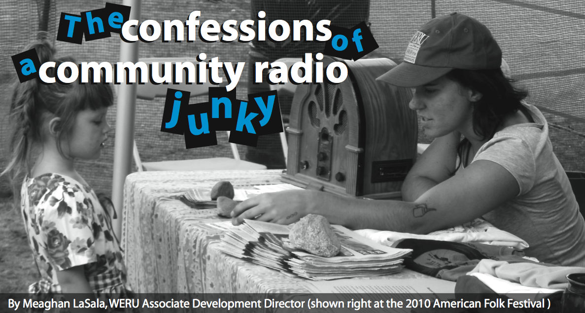

radio
Community Radio Day Agenda
![[node-title]](../../sites/transmissionproject.org/files/imagecache/resource-thumbnail/resources/thumbs/radioDayAgenda.png)
Organization:
Access Humboldt The agenda for Community Radio Day at Access Humboldt organized by corps member Sam Kaplan.
Barnraising Manual
![[node-title]](../../sites/transmissionproject.org/files/imagecache/resource-thumbnail/resources/thumbs/barnRaising.png)
Organization:
Prometheus Radio Project A guide to putting on a Barnraising event created by corps member Katie Ingersoll.
“This manual is designed for Prometheus staff, interns, or volunteers involved in organizing a radio barnraising. Its based on the experiences of staff at barnraisings over the years, and was written after the WGXC barnraising in September 2010. Its designed to provide information primarily about the logistical considerations involved in a barnraising, and problems that might come up.”
Guide to Organizing an Event
![[node-title]](../../sites/transmissionproject.org/files/imagecache/resource-thumbnail/resources/thumbs/weruEvent.png)
Organization:
WERU-FM Community Radio A guide for organizing events at community radio station WERU-FM created by corps member Meaghan LaSala.
How to Write a Press Release
![[node-title]](../../sites/transmissionproject.org/files/imagecache/resource-thumbnail/resources/thumbs/weruPressRelease.png)
Organization:
WERU-FM Community Radio A guide to writing Press Releases for community radio station WERU-FM by corps member Meaghan LaSala.
Instructional Video on how to become a program host on Konza Internet Radio
Organization:
UFM Community Learning Center An instructional video showing how easy it is to become a program host on Konza Internet Radio created (and featuring) corps member Megan Andrews.
View her video on facebook here: https://www.facebook.com/video/video.php?v=956493048271&oid=134500016601814&comments
LPFM Station Survey
![[node-title]](../../sites/transmissionproject.org/files/imagecache/resource-thumbnail/resources/thumbs/Surveylogo2_1.jpg)
Organization:
Prometheus Radio Project Corps member Katie Ingersoll at Prometheus Radio Project is surveying LPFM stations throughout the nation to collect information about their unique programming, how they manage their station, and their finances. The data will be added to the Community Media Database project to act as a resource to stations and future LPFM applicants, allowing them to locate and contact other stations, and see information about how other stations function.
Katie made the survey and will be heading up outreach to stations to drive participation.
Programming Calendar for Internet Radio
![[node-title]](../../sites/transmissionproject.org/files/imagecache/resource-thumbnail/resources/thumbs/mmsCalendar.png)
Organization:
UFM Community Learning Center The monthly programming calendar for KONZ Internet Radio in Manhattan, Kansas made and used by corps member Megan Andrews.

Volunteer Manual
![[node-title]](../../sites/transmissionproject.org/files/imagecache/resource-thumbnail/resources/thumbs/volunteerManual.png)
Organization:
UFM Community Learning Center A volunteer manual developed by corps member Megan Andrews. The “House Rules” section was given by another station, KBOO, out of Portland.
The Confessions of a Community Radio Junky

Digital Arts Service Corps member Meaghan Lasala has been receiving a lot of great press on her work for community radio station WERU in East Orland, Maine. Meaghan was tasked with expanding the outreach of WERU into the Bangor Area and she has been making great progress during the first 4 months of her service year.
The Bangor Area Commons Radio Show
![[node-title]](../../sites/transmissionproject.org/files/imagecache/resource-thumbnail/resources/thumbs/99.9_take2.png)
Organization:
WERU-FM Community Radio ‘The Bangor Area Commons’ radio show produced by corps member Meaghan Lasala. As part of Meaghan’s outreach efforts to connect with the Bangor community she has started this public affairs show dedicated to the people, stories, and issues of Bangor. The show not only spreads awareness of WERU to the Bangor area but also demonstrates to Bangor residents the power of local, community radio.
See her full archive of shows here: http://archives.weru.org/category/99-9-hour